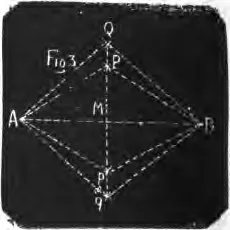

Libro III: Moltiplicazione e Divisione delle Distanze¶
Raddoppiamento, Bisezione, Suddivisione e Trisezione al Solo Compasso (Pavia, 1797, §§ 64–68)

Book III § 64: Linear Distance Doubling
§ 64. Problem. To double the distance \(AB\) in a straight line.

Book III § 66: Distance Bisection Without Straightedge (Solution V)
§ 66. Problem. To bisect a given distance \(AB\).

Book III § 67: Repeated Binary Distance Subdivision
Problem. To continue to subdivide into two equal parts with the simplest construction (fig. 18 and 19), \(AM\) into \(N\), \(AN\) into \(O\), and so on to infinity.

Book III § 68: Distance Trisection in a Straight Line
Problem. To divide the distance \(AB\) into three equal parts.